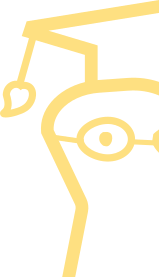

Somos una institución pública en Mar del Plata comprometida con la formación académica y profesional en el ámbito de las artes visuales. Fomentamos la creatividad, el pensamiento crítico y la innovación, contribuyendo al enriquecimiento cultural y social de nuestra comunidad.
A lo largo de la carrera, los estudiantes aprenden tanto aspectos técnicos (manejo de software de diseño, tipografía, teoría del color) como estéticos y conceptuales (composición, identidad visual, historia del arte y el diseño y comunicación visual).
Saber másLa carrera forma profesionales capaces de crear y construir espacios escénicos que acompañen y potencien la narrativa de una obra teatral, cinematográfica o audiovisual. El escenógrafo transforma ideas, textos y emociones en espacios visuales que enriquecen la experiencia del espectador, uniendo arte, técnica y dramaturgia.
Saber másLa carrera forma personas capaces de expresar ideas, emociones y realidades a través de imágenes fotográficas, combinando sensibilidad estética con dominio técnico. Es mucho más que tomar una foto: es saber ver el mundo con intención, contar historias y documentar momentos con una mirada propia y profesional.
Saber másLa carrera forma personas capaces de comunicar visualmente ideas, textos y emociones a través del dibujo. La ilustración no es solo arte: es un lenguaje visual que acompaña, complementa o incluso reemplaza a las palabras para transmitir mensajes de forma clara, creativa y poderosa.
Saber másLa carrera de Medios Audiovisuales forma profesionales capacitados para crear contenidos para plataformas digitales, cine y televisión, abarcando tanto lo técnico como lo creativo. Un realizador audiovisual piensa, produce y comunica a través de la imagen en movimiento, con una mirada crítica y comprometida con su entorno.
Saber másEl Profesorado en Artes forma profesionales capaces de enseñar y transmitir el arte como una herramienta de conocimiento, expresión y transformación personal y social. La carrera prepara docentes que no solo enseñan técnicas, sino que también acompañan procesos creativos, fomentan el pensamiento crítico y promueven el acceso a la cultura.
Saber más
La carrera de Realizador en Artes Visuales forma artistas con una mirada contemporánea, capaces de crear obras en distintas disciplinas y de participar activamente en el mundo del arte. No solo se aprende a producir, sino también a pensar el arte: a construir un discurso propio, tanto individual como colectivo, que dialogue con el contexto social y cultural actual.
Saber másDescubrí los eventos, mesas de exámenes y jornadas que tenés este año.

Oct
24
Taller de afiches
por Coco Cerella

Oct
24
Taller de afiches
por Coco Cerella

Oct
24
Taller de afiches
por Coco Cerella
Brindamos a nuestros estudiantes una formación especializada que les permita insertarse en el mundo laboral con éxito.
La Escuela promueve el vínculo ofreciendo espacios de encuentro con empresas referentes del sector, charlas, talleres y eventos que permiten a los estudiantes generar conexiones valiosas para su desarrollo profesional.
“La Malharro” sigue formando artistas y diseñadores listos para aportar su creatividad al mundo.
Descubrí los proyectos creados en nuestros talleres y aulas.
La Escuela se encuentra en la ciudad de Mar del Plata. Ubicada en la esquina de Luro y La Pampa, frente a la Terminal de micros.
(hacer respuesta)
El ciclo lectivo suele comenzar en abril y se divide en dos cuatrimestres. Hay períodos específicos para inscripciones, cursadas, exámenes y mesas finales. El calendario académico se publica en el sitio web institucional, redes sociales y en los murales de la escuela.
La escuela organiza sus actividades en tres turnos: mañana, tarde y noche. Cada carrera tiene asignado un turno específico, y los horarios pueden variar según el año y la materia. Es importante consultar el cronograma actualizado que publica la institución al inicio de cada ciclo lectivo o contactar a la preceptoría correspondiente.
Sí. La escuela ofrece espacios de formación abiertos a la comunidad a través de talleres y cursos de extensión. Están pensados para quienes desean ampliar su formación, explorar nuevas técnicas o profundizar en lenguajes artísticos específicos. La oferta se actualiza periódicamente y contempla diversas disciplinas como dibujo, pintura, fotografía, diseño y medios digitales. Puedes consultar más información en el apartado de talleres
Para ingresar a una carrera superior se solicita título secundario completo, DNI y descargar el formulario de inscripción online para presentar durante el periodo de inscripciones